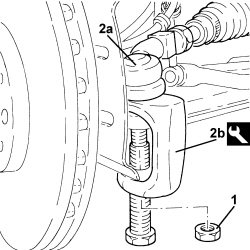
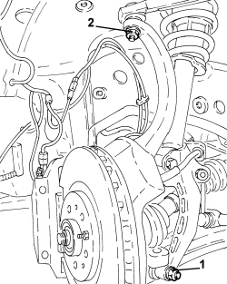
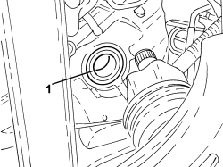

2130C36 OIL SEAL FOR LH DIFFERENTIAL SHAFT - R R
- Path
- Procedures > 21 GEARBOX UNIT > 2130 AUTOMATIC TRANSMISSION WITH DIFFERENTIAL > 2130C AUTOMATIC TRANSMISSION DIFFERENTIAL > 2130C36 OIL SEAL FOR LH DIFFERENTIAL SHAFT - R R
- Kind
- repair procedure (removal / refitting; the operation number is the code)
- Applies to
- engines: 3.2 JTS; all production periods
- Interactive page
- https://sloeber94.github.io/elrnDB-aBrrSpdr/en/#/946004273
Applies to: engines: 3.2 JTS; all production periods
 Removing
Removing
 Refitting
RefittingOp. 7055B54 UNDER ENGINE PROTECTION/GUARD - R.R.
Op. 4450B02 LEFT FRONT WHEEL - R.R
Op. 7055B90 LEFT FRONT WHEEL ARCH LINER - R.R.
Op. 7055B65 ENGINE COMPARTMENT DUST COVER IN LEFT FRONT WHEEL ARCH - R.R.
1. Undo the nut fixing the left steering rod to the steering knuckle.
2. Disconnect the left steering rod (2a) from the steering knuckle using the tool (2b).
Tool | Description | Function | Validity |
|---|---|---|---|
1871000700 | Extractor | Extracting steering rod from strut |

Applies to: engines: 3.2 JTS; all production periods
1. Undo the lower bolt securing the fork to the lower track control arm.
2. Undo the nut and disconnect the left front steering knuckle from the upper track control arm.
- Retract the left front driveshaft to release it from the differential. Secure the steering knuckle to the upper track control arm.

Applies to: engines: 3.2 JTS; all production periods
1. Release and remove the left differential shaft oil seal.

Applies to: engines: 3.2 JTS; all production periods
Applies to: engines: 3.2 JTS; all production periods
Refitting
Removing- Moisten a new left differential shaft oil seal with transmission fluid.
- Place the new left differential shaft oil seal in its housing
- Place the left front driveshaft back in its housing.
- Connect and tighten the nut fixing the left front steering knuckle to the upper track control arm to torque.
Component | Fastening | dia | Value (daNm) | Validity |
|---|---|---|---|---|
Front suspension upper track control arms | Nut | M10 | (steering knuckle side) 4.1 - 5.0 |
- Connect and tighten the bolt fixing the left front shock absorber fork to the lower track control arm to torque.
Component | Fastening | dia | Value (daNm) | Validity |
|---|---|---|---|---|
Lower fork connecting front suspension shock absorber to lower track control arm | Bolt (to be replaced) | M14 | (lower track control arm side) 4.5 ÷ 5.5 + 90° |
- Connect the left steering link to the steering knuckle and tighten the nut to the specified torque.
Component | Fastening | dia | Value (daNm) | Validity |
|---|---|---|---|---|
Steering rods | Nut | M12 | (steering knuckle side) 9.0 - 11.0 |
Op. 7055B65 ENGINE COMPARTMENT DUST COVER IN LEFT FRONT WHEEL ARCH - R.R.
Op. 7055B90 LEFT FRONT WHEEL ARCH LINER - R.R.
Op. 4450B02 LEFT FRONT WHEEL - R.R
Op. 0010T45 AUTOMATIC TRANSMISSION FLUID CHECK LEVEL AND TOP UP IF NECESSARY